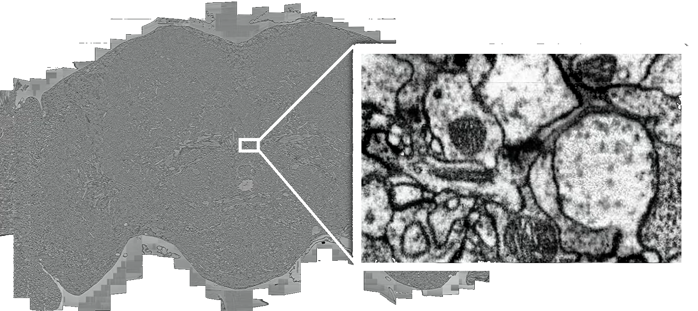
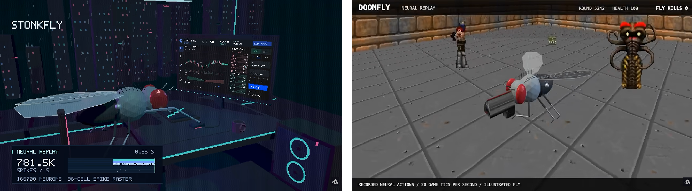
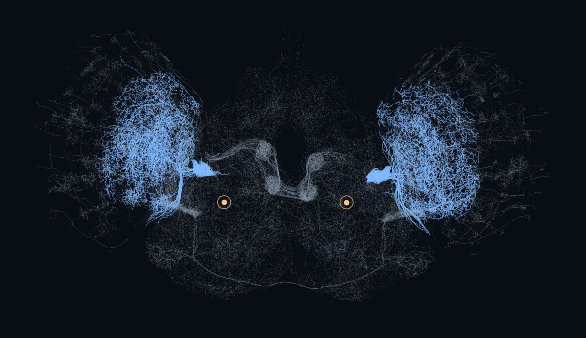

1. A stochastic network on MaleCNS
Can spontaneous neural activity tell us how a circuit will respond when we stimulate it? At equilibrium, a fluctuation–response relation gives a precise answer. The directed wiring of the fly nervous system provides a way to test when that prediction remains useful in a stochastic neural model.
1.1 From synaptic integration to binary neurons
At a chemical synapse, a presynaptic neuron releases a transmitter that alters the response of a postsynaptic cell. How strongly the cell responds, and whether the effect raises or lowers its excitability, depends on factors such as the receptors present and the state of the cell. A connectome records the anatomical routes along which these interactions can occur. A dynamical model adds a state variable for each cell and a rule for how the states change.
A McCulloch–Pitts unit represents cell i by a binary state σi ∈ {0, 1}. The corresponding spin in the −1/+1 convention is si = 2σi − 1. Its incoming signals enter a weighted sum, which is compared with a threshold to determine the next state. The stochastic model retains the same integration rule and uses a probability of activation that increases smoothly with the local field. In a recurrent network, the current states feed into subsequent updates, allowing activity to persist or spread after a perturbation. McCulloch and Pitts (1943).
1.2 Reconstructing MaleCNS from electron microscopy
MaleCNS is a reconstruction of the central nervous system of one adult male Drosophila melanogaster. It includes the central brain, both optic lobes and the ventral nerve cord, joined through the neck connective. The project brought together the FlyEM team at HHMI Janelia, the University of Cambridge, the MRC Laboratory of Molecular Biology and Google Research. Berg et al. (2026), MaleCNS data release.
The team embedded the tissue in resin and divided it into slabs approximately 20 μm thick. Each slab was imaged by enhanced focused ion beam scanning electron microscopy (eFIB-SEM). An ion beam mills away a thin layer and an electron microscope scans the newly exposed surface. Repeating this cycle yields a stack of images. The stacks were aligned and stitched into a three-dimensional volume sampled at 8 × 8 × 8 nm per voxel. Figure 1 illustrates the scales involved, from a whole tissue cross-section to ultrastructural detail. Berg et al. (2026), STAR Methods.

After alignment, flood-filling neural networks grouped image voxels into reconstructed cellular processes. A separate pipeline detected candidate presynaptic release sites and postsynaptic partners. Human proofreading corrected segmentation errors, such as one process being split into pieces or segments of different cells being joined, and anatomists annotated the reconstructed neurons. The study reports 166,700 neurons, including sensory axons. Approximately 124.2 million contacts have both ends assigned to proofread neurons, forming about 25.6 million directed neuron-to-neuron edges. Contacts between the same ordered pair contribute to the same edge. Berg et al. (2026).
1.3 From synaptic contacts to stochastic dynamics
Let V be the set of modeled cells. We write cji for the number of detected contacts from source j to target i. In the dynamical matrix, the convention is target first, so Jij multiplies the activity of j in the local field of i. The contact count supplies a measure of anatomical multiplicity. We convert it into an effective coupling through a magnitude transform f, a presynaptic sign aj and an incoming normalization Zi.
The baseline takes f(c) = c. It maps the release's consensus transmitter annotation to aj = +1 for acetylcholine and aj = −1 for GABA, histamine and glutamate, with aj = 0 for other or unresolved labels. This assigns a single effective sign to all outgoing couplings from a cell. The annotation concerns transmitter identity. The effect on each target also depends on its receptors, which makes sign choices such as the glutamate assignment a sensitivity parameter. A compressive transform such as f(c) = log(1 + c) is another way to test how much the result depends on the largest contact counts. Berg et al. (2026), STAR Methods, Eckstein et al. (2024).
The sum of absolute incoming weights is one for each row with positive Zi. A row with Zi = 0 is set to zero. For subnetworks extracted from the full graph, we retain the full-graph denominator so that dropping cells does not amplify the surviving inputs. The omitted cells then contribute no activity to the reduced dynamics.
Write σ(t) for the configuration at time t and σi(t) for its ith component. Given a configuration σ, an elementary update selects one cell i uniformly at random. The gain g scales all recurrent contributions, hi(t) is the applied external field, and θi is the threshold. The local field φi combines these terms, and the inverse-noise parameter β sets the slope of the logistic update rule.
The new state can be 0 or 1 regardless of its previous value, while all other cells keep their states. As β increases, the activation curve approaches a threshold away from φi = 0. With fixed fields the updates form a time-homogeneous Markov chain on the binary configurations. A sweep comprises N = |V| update attempts with replacement. It is a unit of simulation time.
1.4 Detailed balance and the response at equilibrium
A distribution π is stationary if the Markov update leaves it invariant. Detailed balance additionally requires π(σ)P(σ, σ′) = π(σ′)P(σ′, σ) for every pair of configurations. At finite β with finite fields, each single-cell flip and each self-transition has positive probability. On a finite network this gives a unique stationary distribution, including for asymmetric couplings. Whether there is a net probability current between individual pairs is a separate question.
When Jij = Jji, the zero diagonal and a constant field give the energy below. The energy difference for changing a single cell from 0 to 1 is −φi. The logistic update is therefore the one-cell conditional distribution of the Gibbs law, and uniform random-sequential updates satisfy detailed balance. Asymmetric couplings can support stationary probability currents and invalidate this equilibrium construction. Aguilera et al. (2023).
Suppose a trajectory starts in the unperturbed stationary distribution. At time zero we switch on a field of amplitude ε and hold it fixed. If the equilibrium energy changes by −εB(σ), the integrated linear response of an observable O is determined by its spontaneous cross-covariance with B. Here COB(t) = Cov0[O(σ(t)), B(σ(0))], measured under the unperturbed dynamics.
The average ⟨·⟩ε is over trajectories that evolve with the applied field after time zero. The identity compares a quantity measured after stimulation with one measured entirely at rest. That comparison is our test of how far an equilibrium prediction transfers to the directed model. Baiesi, Maes and Wynants (2009).
2. What can we do with the wiring diagram?
2.1 A fly in Minecraft, Doom and chess
The phrase open-sourcing a fly’s brain became a shorthand for an eclectic set of projects. These demonstrations share a design choice: software encodes a game or market state as neural input, then maps selected neural activity back to an action. Their treatment of learning varies.
- NeuroCraft Fly
- Minecraft events drive modeled sensory cells. Selected neural outputs trigger and modulate scripted body programs, such as grooming. The project assigns the input and action mappings by hand. Project repository.
- DOOMFLY
- Game frames drive modeled visual inputs. A fixed interface maps selected descending activity to button presses. The project also tests dopamine-gated plasticity on a subset of existing connections and reports that its latest documented candidate failed the survival validation. Project repository.
- Alpha Fly
- A learned encoder sends chess positions into the network and learned readouts score moves and positions. AlphaZero-style self-play trains those mappings, synaptic gains and neuron parameters with the wiring topology fixed. Search also contributes to the moves the system plays. Project repository.
- Stonkfly
- Market data rendered as charts enter a modeled visual interface. A fixed neural readout proposes buy, sell or hold. The default setup simulates trades, and the authors treat plasticity as an experimental feature. Project repository.

2.2 Scientific uses of MaleCNS
The reconstruction also makes specific anatomical questions testable. Berg and colleagues compared male and female circuits and found that sex differences are concentrated in higher-order parts of the central brain, with identified pathways connecting sensory input to descending systems. A companion study traced paths from photoreceptors through the layered optic lobes and into the central brain. It found broad distribution of visual input alongside convergence at locations linked to particular visual features and spatial sampling. These studies use the wiring itself to formulate hypotheses about circuit function. Berg et al. (2026), The organization of visual pathways (2026).
A complementary example comes from FlyWire, the separate adult female brain reconstruction. Shiu and colleagues built a spiking model from its connectivity and transmitter predictions, used it to identify candidates involved in taste responses, and tested selected predictions experimentally. It illustrates how a dynamical model can turn structural data into a perturbation experiment. Shiu et al. (2024).
2.3 From task performance to a prediction from equilibrium
In a task-oriented machine-learning study, the graph can constrain a system optimized for a score such as chess performance. Our objective is to test a specific prediction about the dynamics of a fixed-weight model. For which population pairs and timescales can spontaneous fluctuations predict the response to a weak field as the model departs from detailed balance?
To construct the reversible reference, we decompose the signed, normalized matrix J from Section 1.3 into its symmetric part S and antisymmetric part K. We then vary their relative contribution through α.
At α = 0 the dynamics is reversible under the specified update rule. At α = 1 the weights equal the directed effective coupling inferred from MaleCNS. Symmetrizing can introduce a reverse coupling where an anatomical edge is one-way, so the symmetric end is a mathematical control. The comparison holds the modeled cells, update rule, fields at rest and values of β, g and θ fixed. Since the interpolation also changes incoming strengths and can shift mean activity, we will monitor the operating point at each α and check whether any change in predictive accuracy persists when overall coupling strength is matched. Independent row normalization after symmetrization would in general break symmetry.
For a prespecified input set I and readout set R, define B as the sum of the input states and O as the fraction of active readout cells. Adding ε to the field of each input cell gives the energy perturbation −εB(σ) at the symmetric reference. The same intervention is applied at each α. Figure 3 shows one anatomically motivated pair.

- Other sampled traces
- LPLC2 input · B
- DNp01 readout · O
For each α, we will sample the stationary baseline before measuring either covariance or response. One set of trajectories at rest will estimate β [COB(0) − COB(t)]. Separate trials initialized from the same stationary law will estimate susceptibility by comparing the mean activity after steps of size +ε and −ε and dividing the difference by 2ε. Repeating the estimate at smaller ε tests the linear-response regime. The difference between the measured and covariance-based curves will be reported over time with simulation uncertainty. Agreement at α = 0 checks the procedure. At α > 0, the difference quantifies the error of using the equilibrium formula for that readout and intervention.
References
- McCulloch, W. S. and Pitts, W. (1943). A logical calculus of the ideas immanent in nervous activity.
- Berg, S. et al. (2026). Sexual dimorphism in the complete Drosophila male central nervous system connectome. Cell.
- MaleCNS collaboration. MaleCNS v1.0 data release.
- Eckstein, N. et al. (2024). Neurotransmitter classification from electron microscopy images at synaptic sites in Drosophila melanogaster. Cell.
- Ache, J. M. et al. (2019). Neural basis for looming size and velocity encoding in the Drosophila giant fiber escape pathway. Current Biology.
- Aguilera, M., Igarashi, M. and Shimazaki, H. (2023). Nonequilibrium thermodynamics of the asymmetric Sherrington–Kirkpatrick model. Nature Communications.
- Baiesi, M., Maes, C. and Wynants, B. (2009). Fluctuations and response of nonequilibrium states. Physical Review Letters.
- NeuroCraft Fly. Project documentation.
- DOOMFLY. Project documentation and validation reports.
- Alpha Fly. Project documentation.
- Stonkfly. Project documentation.
- The organization of visual pathways in the Drosophila brain (2026). Cell.
- Shiu, P. K. et al. (2024). A Drosophila computational brain model reveals sensorimotor processing. Nature.